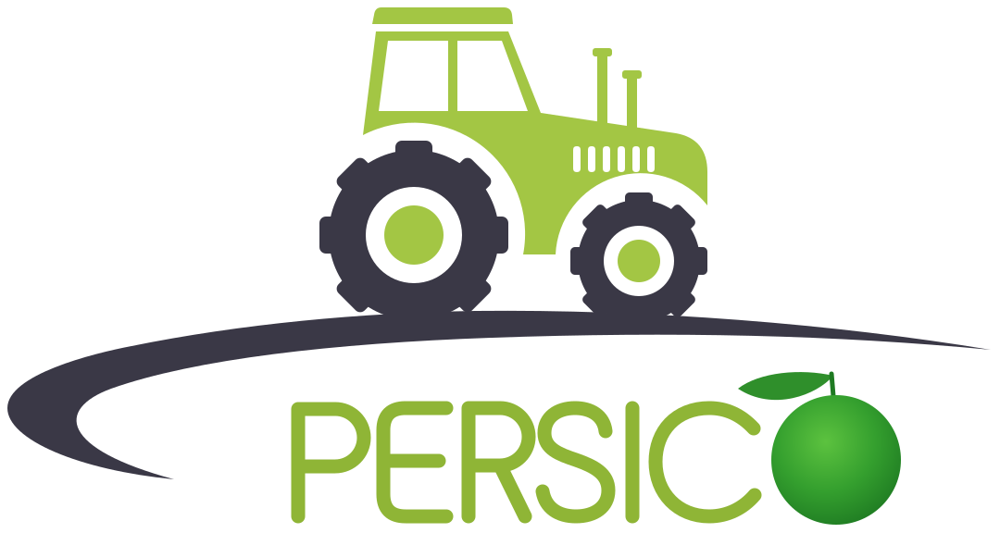
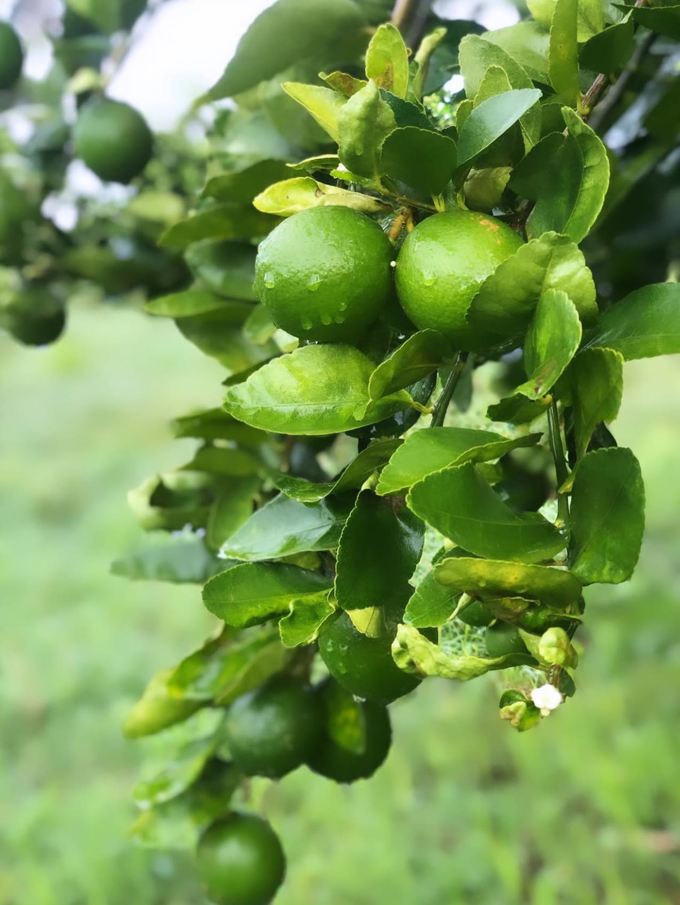
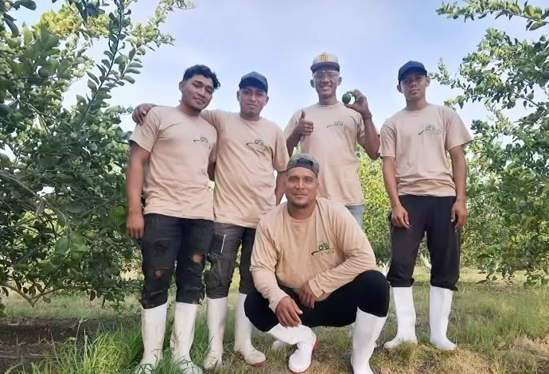
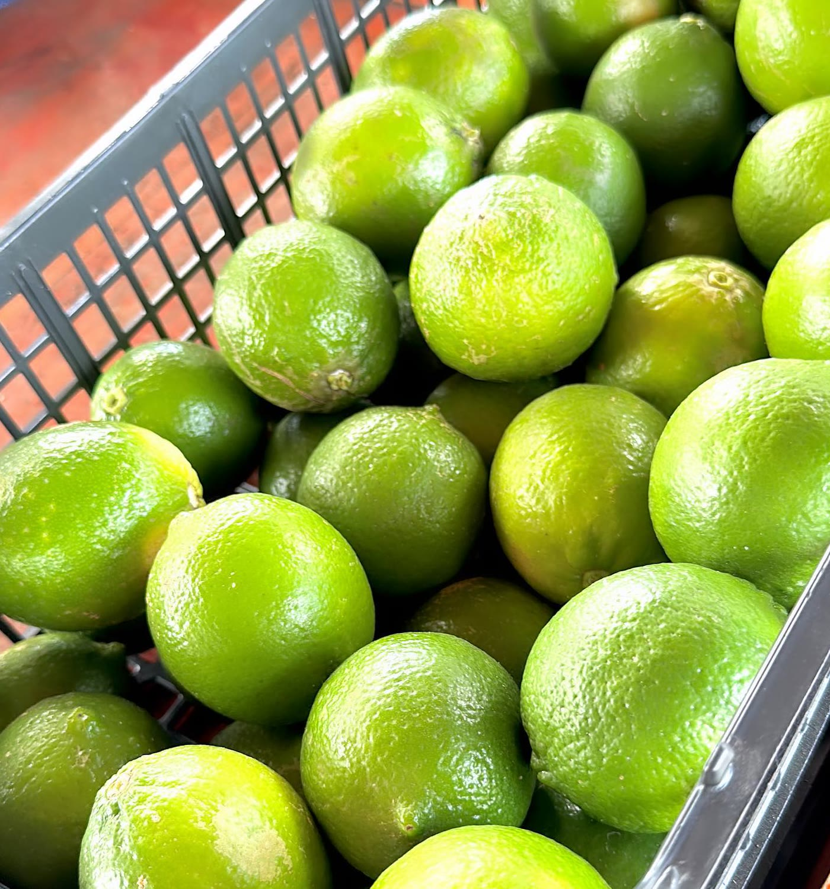
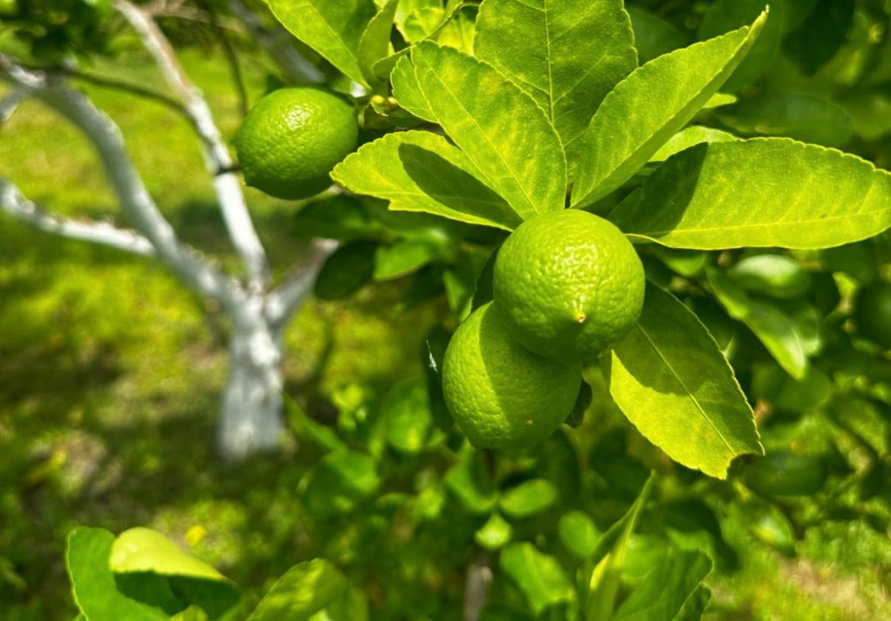

Somos una limonera salvadoreña. Sembramos, cuidamos y cortamos nuestro propio limón para que cada cliente reciba calidad.
Vigilamos la maduración y alimentamos cada árbol con los nutrientes que necesita.
Seleccionamos cada corta antes de que salga de la finca.

Brindamos limón a mayoristas, que pueden recoger directo en nuestra limonera.
Zacatecoluca, La Paz, El Salvador.
Escríbanos y recoja en la limonera, o se lo llevamos a su negocio.
Hacemos entregas en San Salvador y sus alrededores.
La cosecha se vigila día a día.
Seguimos creciendo, siempre con plantas certificadas.
Detrás de cada limón está el equipo que cuida de Pérsico.
Todo nuestro limón nace y crece en El Salvador.

Escríbanos por WhatsApp o mándenos un mensaje en Instagram.